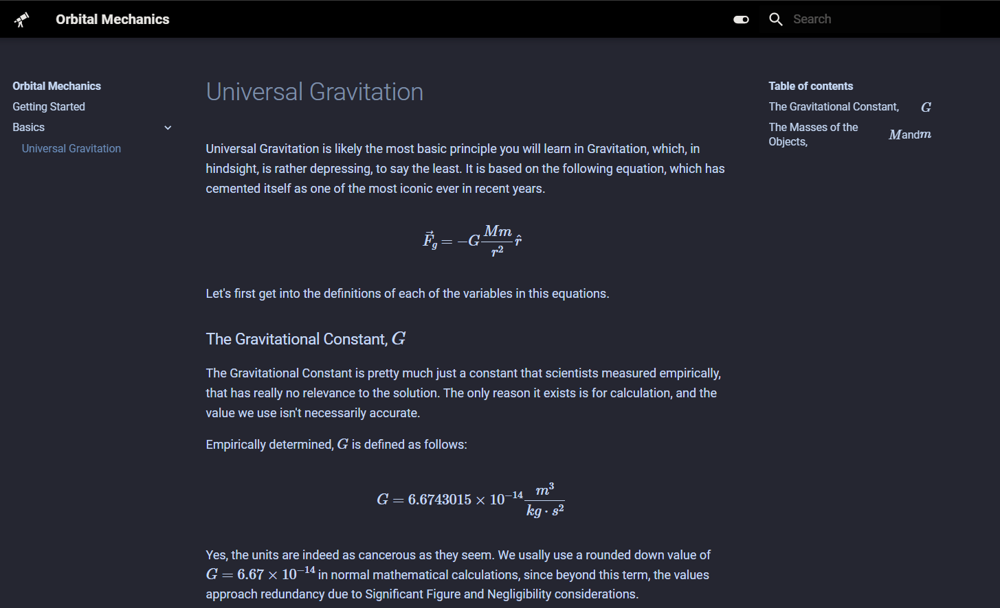

Welcome to Astrosite!
Astrosite is a basic template to create Astronomy-related Websites in MkDocs with Material as a theme. This is a sample site template for the Astronomy Club CCA. You can use this for Theory and more stuff.
Features
LaTeX Support

The MkDocs system implemented provides comprehensive LaTeX support. By enclosing within a $$ ... $$ for breakout highlighted LaTeX posts, or $ ... $ for inline LateX, you can display mathematical text and information in a proper format.
For instance, $x_a^b$ gives \(x_a^b\), while $e^{-x^2}$ will give \(e^{-x^2}\), which is pretty helpful for highlighting variables or values between text.
On the other hand, we also have larger equations like the following:
gives
Which is, of course, the vectorised equation of Universal Gravitation. Similarly, something like as follows:
$$\begin{align*} g &= G \frac{M}{r^2} \\ &= 9.806 - \frac{1}{2} (9.832 - 9.780) \times \cos \left( 2\theta \right) \end{align*}$$
It yields the following result, where \(\theta\) denotes the angle of elevation.
This is useful especially in Physics-heavy fields of Astronomy, since they do require LaTeX for focusing on them.
Note that multiline statements still require it to be in one line since you are using markdown.